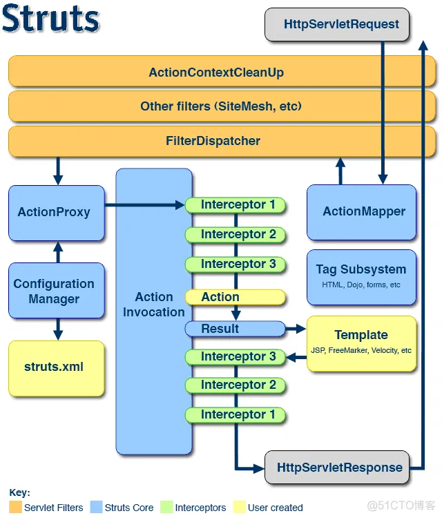
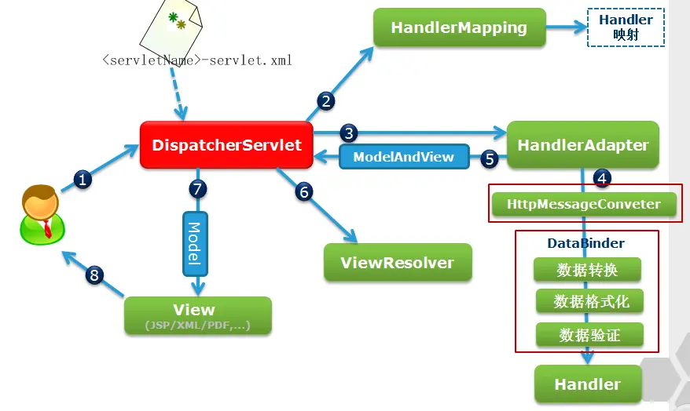

Java之SSH框架学习笔记
最近处理的几个项目都是用Java语言编写的，学习一下。
Web.xml配置文件
Listener
- ServletContextListener：用于监听Web应用的启动和关闭；
- ServletContextAttributeListener：用于监听ServletContext范围（application）内属性的改变；
- ServletRequestListener：用于监听用户的请求；
- ServletRequestAttributeListener：用于监听ServletRequest范围（request）内属性的改变；
- HttpSessionListener：用于监听用户session的开始和结束；
- HttpSessionAttributeListener：用于监听HttpSession范围（session）内属性的改变。
Filter
Filter可认为是Servle的一种“加强版”，主要用于对用户请求request进行预处理，也可以对Response进行后处理，是个典型的处理链。使用Filter的完整流程是：Filter对用户请求进行预处理，接着将请求HttpServletRequest交给Servlet进行处理并生成响应，最后Filter再对服务器响应HttpServletResponse进行后处理。Filter与Servlet具有完全相同的生命周期，且Filter也可以通过
换种说法，Servlet里有request和response两个对象，Filter能够在一个request到达Servlet之前预处理request，也可以在离开Servlet时处理response，Filter其实是一个Servlet链。
以下是Filter的一些常见应用场合：
- 认证Filter
- 日志和审核Filter
- 图片转换Filter
- 数据压缩Filter
- 密码Filter
- 令牌Filter
- 触发资源访问事件的Filter
- XSLT Filter
- 媒体类型链Filter
Servlet
Servlet通常称为服务器端小程序，是运行在服务器端的程序，用于处理及响应客户的请求。Servlet是个特殊的java类，继承于HttpServlet。客户端通常只有GET和POST两种请求方式，Servlet为了响应则两种请求，必须重写doGet()和doPost()方法。
Bean
JavaBeans是Java中一种特殊的类，可以将多个对象封装到一个对象（bean）中。特点是可序列化，提供无参构造器，提供getter方法和setter方法访问对象的属性。名称中的“Bean”是用于Java的可重用软件组件的惯用叫法。
Web.xml加载顺序
总的来说，web.xml的加载顺序是:
-> -> -> 。其中，如果web.xml中出现了相同的元素，则按照在配置文件中出现的先后顺序来加载。
对于某类元素而言，与它们出现的顺序是有关的。以
为例，web.xml中当然可以定义多个 ，与 相关的一个元素是 ，注意，对于拥有相同 的 和 元素而言， 必须出现在 之后，否则当解析到 时，它所对应的 还未定义。web容器启动初始化每个 时，按照 出现的顺序来初始化的，当请求资源匹配多个 时， 拦截资源是按照 元素出现的顺序来依次调用doFilter()方法的。 同 类似，此处不再赘述。 Servlet里有request和response两个对象，Filter能够在一个request到达Servlet之前预处理request，也可以在离开Servlet时处理response，Filter其实是一个Servlet链。
Struct2
请参考Struct2 基础介绍 。

Spring
请参考Spring MVC 解析之 DispatcherServlet。

参考链接
- web.xml 配置文件 超详细说明！！！ ,by 吴川华仔.
- web.xml文件中加载顺序的优先级 ,by laolu0837.
- Spring 、SpringMVC 、Struts2之间的区别,by 刘二雄.
- Struct2 基础介绍 ,by shiyuan310.
- 深入Struts2的过滤器FilterDispatcher–中文乱码及字符编码过滤器,by 关键步就几步.
- Spring整合Struts2步骤及完整实例,by Star_Ship.
- Spring和struts2整合详解,by Damon.
- spring整合struts2过程详解,by 西西嘛呦.
- Spring MVC 解析之 DispatcherServlet,by 摆码王子.
- 一文读懂SpringMVC工作流程,by Wizey.
- servlet的url-pattern匹配规则详细描述,by 51kata.
- Listener,Filter,Servlet执行顺序和生命周期,by laolu0837.
- springmvc 的参数绑定，springmvc和 struts2的区别,by 双斜杠少年.
- 如何集成Struts和Spring,by gxhsnowflower.
- Struts2和Spring集成,by yiibai.
- Spring 和 Struts 集成,by 王如霜.